În stînga este slide-ul din curs, în dreapta aceeași figură, calculată în browser din aceleași date. Butonul ▶ modifică parametrul pas cu pas.
Ce prognozăm și unde este semnalul · Atenția și Transformerele · Testul 1: prognoza randamentelor · Testul 2: prognoza volatilității realizate · Testul 3: VaR 1% și ES 2,5% · Studiu de caz: avantajele complexității · AI pentru descoperire științifică
Ce prognozăm și unde este semnalul
Semnalul: în medie sau în volatilitate
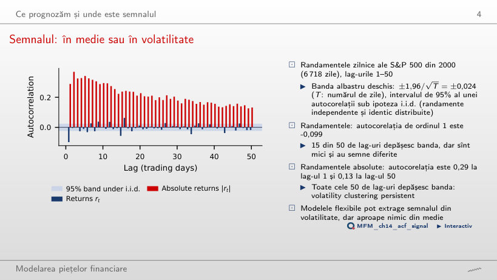
Răspuns
Valorile absolute. Autocorelația lor este 0,29 la lag-ul 1 și încă 0,13 la lag-ul 50, iar toate cele 50 de lag-uri sînt în afara benzii ±0,024. Randamentele au autocorelația −0,099 la lag-ul 1 și 15 lag-uri în afara benzii, mici și cu semne diferite.
Atenția și Transformerele
Împărțirea unui context de 512 zile în patch-uri
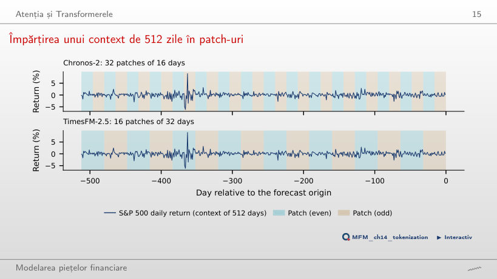
Răspuns
32 de tokeni dau 32² = 1 024 de scoruri, față de 512² = 262 144 dacă fiecare zi ar fi un token, adică de 256 de ori mai puține. TimesFM-2.5 folosește patch-uri de 32 de zile: 16 tokeni și 256 de scoruri.
Testul 1: prognoza randamentelor
R² out-of-sample pentru randamente
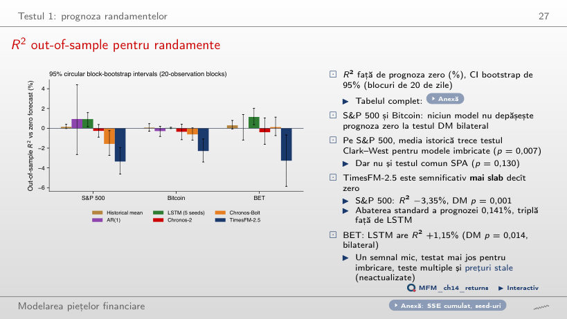
Răspuns
Nu în testul DM bilateral: p = 0,639 pentru AR(1) și 0,090 pentru LSTM. TimesFM-2.5 este semnificativ mai slab decît zero (R² −3,35%, p DM = 0,001). Doar pe BET LSTM trece la 5% (R² +1,15%, p = 0,014), înainte de corecția pentru testele multiple.
Testul 2: prognoza volatilității realizate
Prognozele în timpul șocului din aprilie 2025
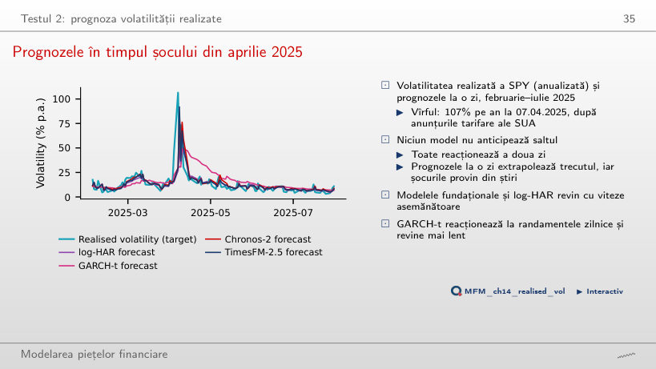
Răspuns
Niciunul. Toate prognozele cresc abia a doua zi: o prognoză la o zi extrapolează trecutul, iar șocul a venit din anunțurile tarifare. Modelele fundaționale și log-HAR revin apoi cu viteze asemănătoare, iar GARCH-t revine mai lent.
Pierderile QLIKE ale celor opt modele de volatilitate
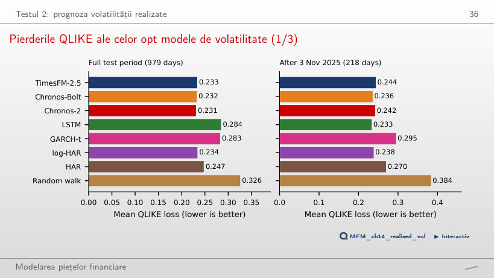
Răspuns
Pierderea QLIKE medie este mai mică (0,231 față de 0,234), dar testul DM nu este semnificativ (p = 0,537), iar mulțimea de încredere a modelelor de 90% păstrează șase din cele opt modele. După 3 noiembrie 2025 cel mai bun este micul LSTM (0,233).
Testul 3: VaR 1% și ES 2,5%
Ratele de depășire ale VaR 1%
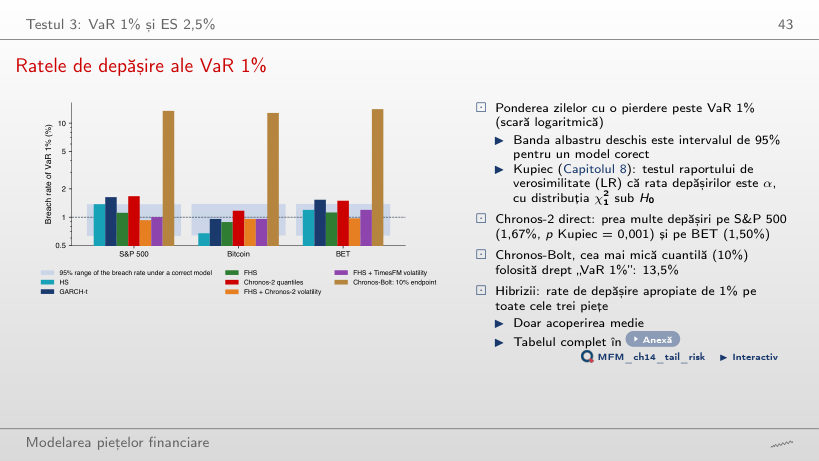
Răspuns
Nu. Rata este 1,67% față de 1% așteptat (p Kupiec = 0,001), peste limita de 37 de depășiri a intervalului de 95%. Folosit ca filtru de volatilitate pentru FHS, același model dă 0,93% (p = 0,71).
Crahul COVID-19: VaR 1% pentru trei modele
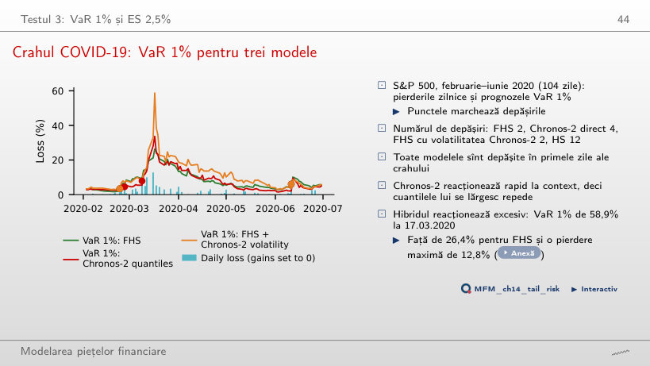
Răspuns
Nu neapărat. Ambele au 2 depășiri în 104 zile, dar hibridul reacționează excesiv: VaR 1% ajunge la 58,9% la 17.03.2020, față de 26,4% pentru FHS și o pierdere zilnică maximă de 12,8%. Chronos-2 direct are 4 depășiri, iar HS 12.
Transformarea integrală de probabilitate (PIT) și calibrarea
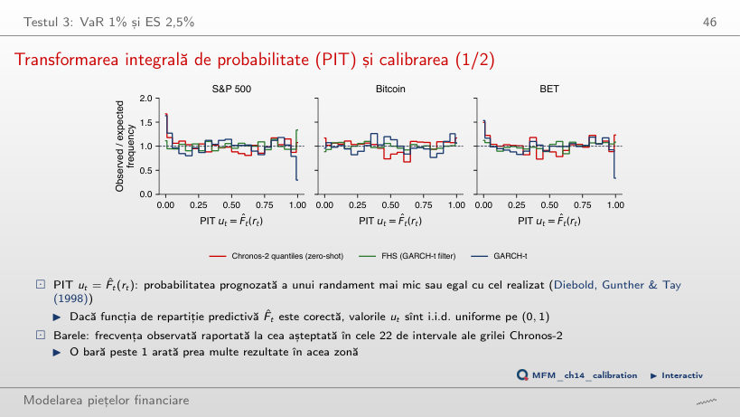
Răspuns
În 1,67% dintre zile, deci prima bară PIT este de aproximativ 1,7 ori înălțimea așteptată: coada stîngă a distribuției zero-shot este prea subțire. FHS dă 1,11%. Testul Berkowitz respinge Chronos-2 pe S&P 500 (p = 0,019, σ̂ = 1,03) și nu respinge niciodată FHS.
Compararea prognozelor (VaR 2,5%, ES 2,5%): MCS
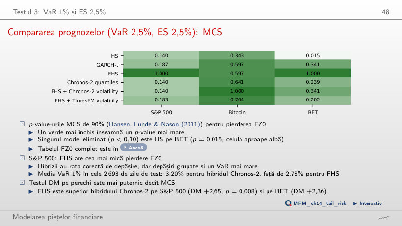
Răspuns
Doar HS pe BET (p = 0,015). Pe S&P 500, FHS are cea mai mică pierdere FZ0, iar testul DM pe perechi, mai puternic decît MCS, arată că FHS bate hibridul cu Chronos-2 (DM +2,65, p = 0,008).
VaR 1% conformal adaptiv pe S&P 500
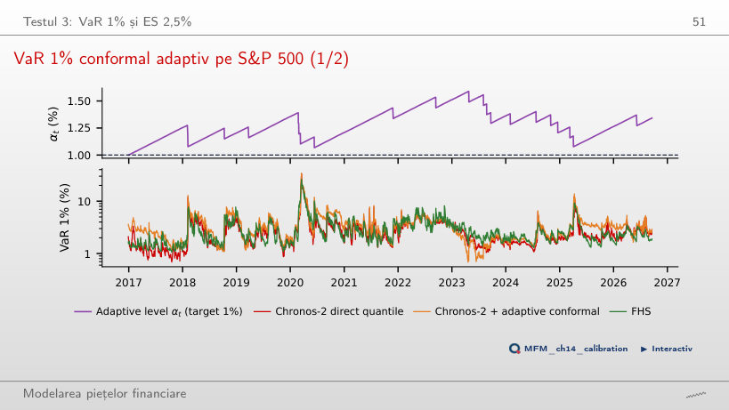
Răspuns
21 de depășiri față de 24,4 așteptate în 2 443 de zile, dar un VaR 1% mediu de 3,36% față de 2,85% pentru FHS în aceleași zile, deci pierderea FZ0 este semnificativ mai mare. Cu γ = 0 (split conformal) sînt 16 depășiri și un VaR mediu de 3,58%.
Studiu de caz: avantajele complexității
Studiu de caz: complexitatea pe datele cursului
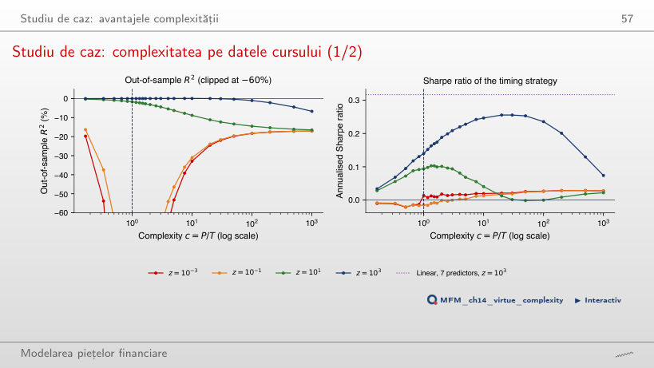
Răspuns
Nu. Cu z = 10³, raportul Sharpe crește de la 0,14 la c = 1 la 0,26 la c = 20 și scade la 0,07 la c = 1 000 (t = 0,4). Modelul liniar cu aceiași 7 predictori și z = 10³ are 0,32. Complexitatea ajută pînă la c ≈ 20, nu pînă la c = 1 000.
AI pentru descoperire științifică
Mini-studiu de caz: un test fără putere
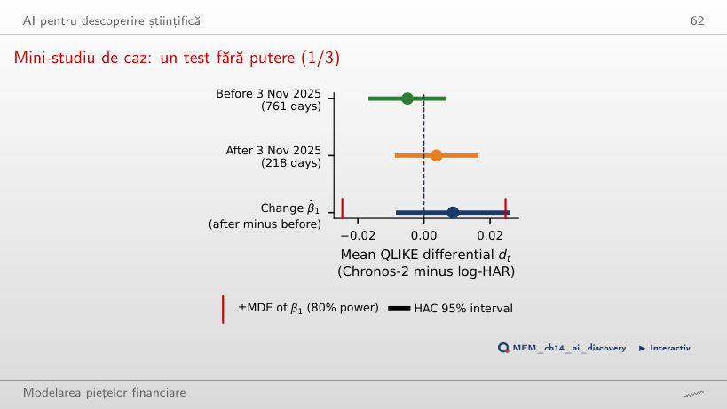
Răspuns
Nu. Schimbarea are t HAC = 1,00 și p = 0,32, iar efectul minim detectabil la o putere de 80% este 0,0247, de 4,9 ori diferența dinaintea publicării. Chiar și cu o fereastră infinită după publicare, MDE ar rămîne 0,0169, deci nici concluzia „fără memorare” nu este un rezultat.
Randamente zilnice S&P 500, Bitcoin și BET și prețuri SPY la 5 minute: EODHD. Prognozele la o zi: Quantlets/Ch_14 (run_forecasts.py). Studiul de caz: SPY (EODHD) și seriile FRED.